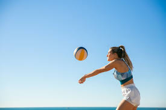

BEGINNERS:
-

Passing
Learn how to recieve attacks and pass the ball to teammates .
-
Blocking
Learn how to block incoming spikes.
-
Serving
Learn the skills to serve the ball accurately.
INTERMEDIATE:
-
Spiking
Learn to spike by mastering your approach, timing, jump, and powerful arm swing to drive the ball forcefully into the opponent's court.
-
Setting
Learn setting in volleyball by practicing precise hand positioning, soft touches, and quick reactions to accurately deliver the ball to your hitters.
-

Digging
Learn digging in volleyball by positioning yourself low, using your forearms to effectively control and lift powerful attacks from the opposing team.
SIDE SKILLS:
-
Foot work
Learn footwork in Volleyball which involves staying low in a ready position, using shuffle and crossover steps for quick lateral movement, and executing a three- or four-step approach for spiking.
-
Team signals
Learning team signals in volleyball involves understanding hand gestures for setting plays, offensive strategies, and defensive formations to communicate tactics quickly and discreetly.
-